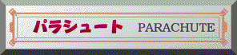
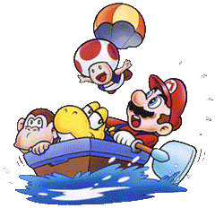
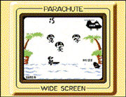
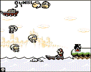

 ●むかしモード ヘリコプターより次々に落下してくるパラシュート部隊。息もつかさぬゲーム展開で、ハラハラ、ドキドキの連発だ。一瞬の判断ミスが命取り！海を泳ぎ回る人喰いザメがあなたのミスを待っています。 ★上達へのコツ スピードが速くなってきたら、音で判断するようにしましょう。常に先の先を読んで船を動かすことが先決です。  ●いまモード 飛行船より次々に落下してくるチビヨッシーやキノピオなど。飛行船は左右に動き、大砲からもキャラクターが発射され、マリオはもうパニック寸前！一瞬の判断力はもちろんスピードも要求されます。 ★上達へのコツ 落ちてくるキャラクターの種類によって、パラシュートを開く位置が違います。キノピオは早い位置で開きますが、ドンキーコングJr.は水面ぎりぎりまで開きません。操作のコツは、＋ボタンだけを使用するのではなく、右移動はAボタンを左移動は＋ボタンの左を使用して両手で操作すると素早く移動することができます。 |
   |